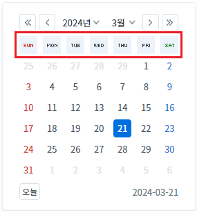
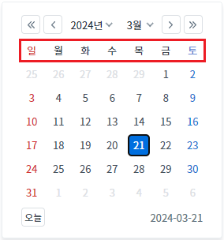
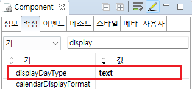

[InputCalendar] 캘린더의 요일을 이미지 또는 텍스트로 표시하기
1개요
InputCalendar의 'displayDayType' 속성을 사용하여, 캘린더의 요일 영역을 브라우저에 렌더링하는 유형을 설정한 예제입니다. 설정을 통해 요일을 이미지 또는 문자열로 표시할 수 있습니다.
2구현된 기능
(기본 설정) 캘린더의 요일을 이미지로 출력
캘린더의 요일을 문자열로 출력
3예제 테스트 방법
예제 프로젝트의 경우 이미지와 문자열의 차이가 확연하게 드러나지 않습니다.
브라우저의 개발자 도구를 통해 출력된 요소(elements)를 명확하게 비교할 수 있습니다.
3.1(기본 설정) 캘린더의 요일을 이미지로 출력
예제 영역 '(기본 설정) 캘린더의 요일을 이미지로 출력'에서 테스트합니다.1
실행 결과를 확인합니다.
InputCalendar의 캘린더 아이콘을 클릭합니다.
캘린더의 요일이 이미지로 표현된 것을 확인합니다. (브라우저의 개발자 도구를 통해 해당 요소를 확인하는 것을 권장합니다.)
Image 1.브라우저(Chrome) 실행 예시 - 캘린더 아이콘

Image 2.브라우저(Chrome) 실행 예시 - 캘린더 - 요일을 이미지로 표현

Example 1.브라우저에 구성된 HTML
<td class="w2calendar_col_day"> <div class="w2calendar_day w2calendar_day0" title="일요일"></div> </td>
Example 2.CSS - 요소에 적용된 class
.w2calendar_class1 .w2calendar_day0 { background: url(../uiplugin/calendar/images/day_sun.gif) center center no-repeat #edf3fb; }
3.2캘린더의 요일을 문자열로 출력
예제 영역 '캘린더의 요일을 문자열로 출력'에서 테스트합니다.1
실행 결과를 확인합니다.
InputCalendar의 캘린더 아이콘을 클릭합니다.
캘린더의 요일이 문자열로 표현된 것을 확인합니다. (브라우저의 개발자도구를 통해 해당 요소를 확인하는 것을 권장합니다.)
Image 3.브라우저(Chrome) 실행 예시 - 캘린더 아이콘

Image 4.브라우저(Chrome) 실행 예시 - 캘린더 - 요일을 문자열로 표현

Example 3.브라우저에 구성된 HTML
<td class="w2calendar_col_day_text"> <div class="w2calendar_day w2calendar_day_text_0" title="일요일">일</div> </td>
Example 4.CSS - 요소에 적용된 class
.w2calendar_class1 .w2calendar_day_text_0 { color: #d02121; }
4구현 예시
4.1캘린더의 요일을 문자열로 출력
1
속성을 설정합니다.
[필수] displayDayType="text"
[default:image, text]calendar의 요일 부분을 image 또는 text 표현할지 설정한다
Image 5.웹스퀘어 스튜디오의 Component View - 속성 설정 예시

Example 5.Source
<!-- inputCalendar 의 소스 본문 예시 --> <w2:inputCalendar displayDayType="text" calendarValueType="yearMonthDate" id="ica_exam_2"> </w2:inputCalendar>
5주요 API
displayDayType